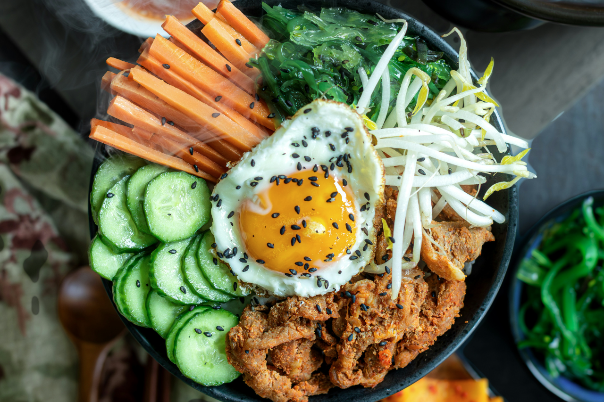

Bibimbap (Gemüsebowl)

 35 Min.
35 Min.
 simpel
simpel
 08.02.2025
08.02.2025
Zutaten für
| 12 g | Shiitake Pilz(e) |
| 400 g | Sushi Reis |
| 2 Handvoll | Babyspinat |
| 100g | Bohnensprossen |
| 2 | Karotte(n) |
| 1 | Zucchini |
| 2 | Knoblauchzehe(n) |
| 4 EL | Öl zum Braten |
| 4 EL | Sojasauce |
| 1 EL | geröstetes Sesamöl |
| 4 | Ei(er) |
| 2 EL | Gochujang |
Zubereitung
 Gesamtzeit: 35 Minuten
Gesamtzeit: 35 Minuten
Pilze 30 Minuten in heißem Wasser einweichen lassen. Reis nach
Packungsanleitung zubereiten. Spinat und Bohnensprossen waschen und
putzen. Karotten schälen und stifteln. Zucchini waschen und in Stifte
schneiden. Gemüse einige Sekunden in kochendem Wasser blanchieren.
Pilze ausdrücken und in feine Streifen schneiden. Knoblauchzehen
schälen und fein hacken, in einer Pfanne in 2 EL Öl anbraten, Pilze
hinzugeben.
Nach 1 Min Sojasauce und Sesamöl hinzufügen, umrühren und
herausnehmen. 2 EL Öl in die Pfanne geben und 4 Spiegeleier braten.
Reis auf 4 Schalen verteilen. Gemüse und Pilze darauf anrichten und je
ein Ei in die Mitte setzen. Am Tisch alles gründlich vermischen und
mit Chilipaste Gochujang nach Belieben würzen. Eventuell mit Sojasauce
und Sesamöl nachwürzen.
Rezept erstellt von
Surab Link